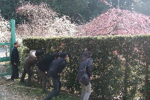
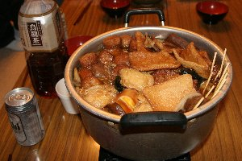

冬のコテージ宴会 | 2007年2月 企画者：Ryuuさん |
|---|---|
| 冬の時期は、個人でスキーなどのアクティビティを楽しむ輩が多いのですが、今回は近場でコテージを借りて宴会をやろう企画が立上りました。 ついでに天体観測までやる？ って事で。 場所は、掛川の北部「ならここの里」です。 ここでコテージを1棟借りて宴会しようって事です。 取りあえず8名が昼に掛川市街に集合し、買い物をして途中で龍尾神社の梅園などを眺めながら現地へ。（梅園は垣根の外から見学） | |
|  梅園を外から見学♪ |  焼き芋が焼き上がる前に乾杯 |
| コテージは想像より綺麗で大きかったです。見た目は小さいけど、二階建てで、小さいながらバス・トイレつき。 キッチンは電気コンロ、食器類まで装備されてます。 早速、一つ目のイベントで焼き芋をはじめました。 石焼芋と思いきや、石の上に薪を載せているので、石は関係ありません。凄い勢いの炎に芋が包まれ、あっという間に一部炭化した焼き芋が出来上がりました。 夕食の前に温泉タイム。 ならここのには温泉も有るので、部屋の狭い風呂ではない温泉に行きました。 私が入ったときは既に夕暮れ時。 露天風呂で星を眺めながらの、優雅な入浴タイムです。 | |
|  しぞーかおでん |  しぞーかおでん好評で良かったです |
| 今回の宴会メニューですが、お鍋とおでんです。 女性陣がお野菜を中心とした水炊き鍋（と思う。間違っていたらスンマセン）を作り、おでんは私が家で作ったものを持ち込みました。（結局私が作るつもりで、半分以上お袋が作りましたが。）一応、静岡おでん（べっしー家バージョン）です。 ちょうど、静岡市で「おでんまつり」もやってましたしね。 以外に、静岡おでんを食べた事がない人が、多いと聞いていたので、是非静岡おでんを知ってもらいたくて。 なかなか好評の様で良かったです♪ お鍋もダシが効いていて、とっても美味しかった。 しっかりダシを取ると、ココまで美味しいものなんですね。 お酒の差し入れも沢山有った為、アルコールが途切れる事は無く、すごくいい気分で宴会は進みました。 宴もたけなわの時分に、Ryuuさんご自慢の天体望遠鏡を見せて頂く事にしました。 もちろん望遠鏡を眺めるのではなく、望遠鏡を覗いて星を見るのですが。 山間のために、天頂付近しか見ることは出来ませんが、それでも多くの星を見ることが出来ました。 特にみんなが感動したのは、土星でしょう。 これは、かむいさんが「あの星を見たい」と名指しして発見？したものです。 なんでも、以前、「惑星は瞬かないから見つけられるよね」と言った、かむいさんの言葉に私が「星の瞬きは空気の揺らめきだから、惑星も瞬くんじゃない？」と言った事を気にしていたようです。（いや、恨みか（笑）） そして、今回瞬かない星を見つけ、望遠鏡で確認したわけですね。参りました m(__)m 望遠鏡で見る土星は、とても大きくて、ロケットで飛べば、直ぐの距離みたく感じられました。 さらに宴会は催され、私はいつものごとく午前1時には時間切れで就寝。宴会から参加した人も含め、お泊り組みは12名でした。 | |
 天体観測 |  世界一願いが叶う念珠 |
| 朝食も美味しそうなパンが並び（パンの差し入れありがとう〜、さるまる☆さん）、サラダやコーヒーで、至福のひと時を過ごし、お寺参りに出発です。 そして油山寺へ。目に御利益が有るそうです。 お線香を上げ、念珠を回し、鐘を鳴らして・・・・。ここの念珠には「世界一願いの叶う大念珠」と書かれていたので、私の大金持ちになる願いも叶うでしょう！！ ゆっくりと流れる時間を堪能し、煩悩を払い落としてきました。（あれ、前述と違う気が・・・） そして、朝食をあれだけ食べたのに、イチゴ狩りに出発です。 大須賀町（大東町？）のイチゴ狩り園で、あきひめを食べ放題。1,500円でした。 半分の人は、数週間前にイチゴ狩りに参加している為、不参加でしたが、私は久しぶりのイチゴ狩りです。 店頭で見たあきひめは、１パック１５個入りで500円だったから、４５個以上食べれば元は取れるぞ！ と聞いて４５個を目標に、大きくて真っ赤なイチゴから食いつきました。 とても甘くて、ミルクを付けなくても十分です。 おかげで私は81個頂きました(^o^)丿 満足です。(o^^o) | |
 さ〜、イチゴ狩りの時間だよ♪ |  真っ赤なイチゴがたわわに実ってます |
| 楽しいひと時は早いもので、帰る時間となりましたが、お昼をイチゴだけでは・・・と言う事で、お好み焼きを食べに行きました。 いや、ほんとに食べてばかりですね。 広島お好み焼き屋さんで、とっても美味しく、身も心も満足です。 もう入りません。 お腹一杯で、メタポリックが気になる、プチ旅行でしたが、とっても楽しかったのです。 | |
| 写真＆コメント ｂｙ べっしー | |